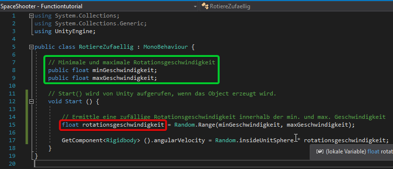
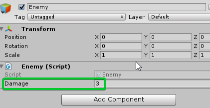

Zugriffskontrolle durch Zugriffsmodifikatoren (access modifiers)¶
Lernziele
In diesem Kapitel lernst du, was Zugriffsmodifikatoren von Variablen und Funktionen (Methoden) sind und wann du welche Art verwenden solltest.
Klassenvariablen¶
Klassenvariablen sind Variablen, die in einer Klasse außerhalb von Funktionen deklariert werden.

Hier sind minGeschwindigkeit und maxGeschwindigkeit Klassenvariablen.
rotationsgeschwindigkeit ist keine Klassenvariable, da sie in der Funktion Start() deklariert wurde. Sie ist eine lokale Variable, die nur innerhalb der Methode verfügbar ist.
Was sind Zugriffsmodifikatoren?¶
Zugriffsmodifikatoren legen fest von wo aus man auf eine Klassenvariable oder eine Funktion zugreifen kann.
Die drei wichtigsten Zugriffsmodifikatoren sind:
- public - Zugriff von überall
- private - Zugriff nur innerhalb der Klasse
- protected - Zugriff innerhalb der Klasse und von allen Klassen die von dieser Klasse erben. (Mehr zu Vererbung unter Objektorientierte Programmierung)
Tipp
public Variablen können in Unity auch im Inspector eingesehen und verändert werden.
Zum Beispiel:
public class Player {
private int hitpoints = 10;
public void NimmSchaden(int schaden){
hitpoints = hitpoints - schaden;
}
}
public class Enemy {
public int damage;
private void Attack(Player player){
player.NimmSchaden(damage);
}
}
hitpoints aus der Klasse Player ist private und kann somit aus der Klasse Enemy nicht direkt verändert werden.
Die Methode NimmSchaden() ist aber public. Somit kann man aus der Klasse Enemy mithilfe dieser Methode die Hitpoints eines Player Objekts verändern.
damage in Enemy ist public. Das heißt in Unity scheint diese Variable im Inspector auf und du kannst direkt im Inspector den Schaden eines Gegners einstellen.

Außerdem kann man auch sonst von überall auf damage zugreifen. Du könntest z.B. Player folgendermaßen erweitern:
public class Player {
private int hitpoints = 10;
public void NimmSchaden(int schaden){
hitpoints = hitpoints - schaden;
}
private void MacheGegnerHarmlos(Enemy enemy){
enemy.damage = 0;
}
}
Achtung
Wenn man für Klassenvariablen oder Methoden keine Zugriffsmodifikatoren angibt, werden diese implizit auf private gesetzt.
Tipp
Zugriffsmodifikatoren sollten, immer möglichst eingeschränkt verwendet werden.
Das heißt public sollte man nur dann verwenden, wenn man einen guten Grund dafür hat.
Ein Programm wird nämlich sehr schnell sehr unübersichtlich, wenn Variablen von vielen verschiedenen Stellen aus bearbeitet werden.
Dadurch kommt es leichter zu Bugs. Außerdem sind diese Bugs dann auch schwerer zu finden.